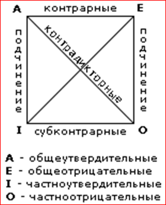
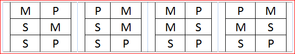
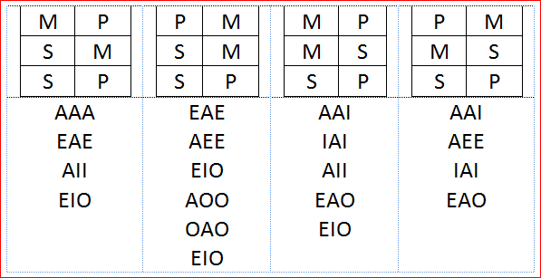

Суждения, умозаключения, силлогизмы… или достижения античной логики в одном посте
Когда я учился в школе, мы изучали логику, но сейчас даже в моём любимом лицее её почему-то не преподают. Более того, я узнал, что большинство моих знакомых (даже успешно закончивших вузы) не знают, ни о логическом квадрате, ни о различных модусах. В этом небольшом топике, я постараюсь вкратце рассказать обо всём. Сразу скажу, что гуру дискретной математики вряд ли узнают что-то новое, но остальным должно быть как минимум интересно, а как максимум полезно.
Суждения
Начнём с самых основ. Т.е. с суждений. Если не вводить строгих определений, то в суждениях просто что-либо утверждается или отрицается. В подавляющем большинстве языков суждения строятся по следующей форме S есть P, при этом S называют субъектом суждения, а P предикатом.
Суждения можно делить по множеству критериев. Например, на простые (суждения без логических связок) и сложные. Простые суждения при этом можно делить на атрибутивные (утверждают или отрицают наличие атрибута), экзистенциональные (утверждают или отрицают существование чего-либо) и суждения с отношениями. Другой вариант классификации суждений — это классификация по качеству: утверждения делятся на утвердительные и отрицательные. Наиболее интересной для нас классификацией является классификация по количеству. Её мы рассмотрим чуть подробнее.
• Общеутвердительные суждения вида «все S есть P» называют суждениями типа A.
• Частноутвердительные суждения вида «некоторые S есть P» называют суждениями типа I.
• Общеотрицательные суждения вида «ни одно S не есть P» называют суждениями типа E.
• Частноотрицательные суждения вида «некоторые S не есть P» называют суждениями типа O.
Традиция обозначать суждения буквами AIEO возникла ещё в средние века. Эти гласные взяты из латинских слов affirmo (утверждаю) и nego (отрицаю).
Логический квадрат
Классификация суждений по количеству важна, потому что на её основе был построен знаменитый логический квадрат.

В углах квадрата показаны виды суждений, а на сторонах и диагоналях квадрата указаны отношения между соответствующими суждениями. Эти отношения требуют некоторых пояснений.
Если между суждениями действует отношение подчинения, то об их истинности можно сказать следующее. Если общее суждение истинно, то подчинённые суждения тоже истинны. Если общее суждение ложно, то о частном суждении ничего определенного утверждать нельзя. Если частное суждение истинно, то об общем ничего определённого утверждать нельзя. Если частное суждение ложно, то и общее суждение тоже ложно.
Контрарные суждения могут быть одновременно ложными, но не могут быть одновременно истинными.
Субконтрарные суждения могут быть одновременно истинными, но не могут быть одновременно ложными.
Контрадикторные суждения не могут быть одновременно ни истинными, ни ложными. Т.е. если одно из контрадикторных суждений истинно, то второе обязательно ложно и наоборот.
Умозаключения
Разобравшись с суждениями, можно перейти к правилам получения новых суждений, т.е. умозаключениям. Начнём с самых простых непосредственных умозаключений.
Простые умозаключения
Превращение
Новое суждение получается путём изменения качества посылки. Для этого необходимо в исходное суждение вставить два отрицания: перед связкой и перед предикатом. На самом деле это очень простое умозаключение по сути оно сводится к следующим превращениям A-E, E-A, I-O,O-I.
Т.е. суждение «некоторые люди талантливы» после превращения станет суждением «некоторые люди не талантливы»(O-I).
Обращение
В обращении новое умозаключение получается после перестановки субъекта и предиката местами. Т.е. суждение «S есть P» превращается в суждение «P есть S». К сожалению, применять эту операция для любых утверждений нельзя, иначе из утверждения «котики — это млекопетающие» мы получили бы «млекопитающие — это котики».
Чтобы обращение было верным, необходимо соблюдать следующие правила:
• Общеутвердительные суждения обращаются в частноутвердительные
• Общеотрицательные суждения обращаются в общеотрицательные суждения
• Частноутвердительные суждения обращаются в частноутвердительные суждения
• Частноотрицательные суждения не обращаются совсем
Противопоставление предикату
Это самая сложная операция, которая по сути является соединением превращения и обращения. На практике это выглядит так: «S есть P» превращается в «не P не есть S». Я специально не буду приводить здесь ограничений, накладываемых на противопоставление предикату, чтобы вы сами могли немного подумать.
Силлогизмы
А мы пока начнём рассматривать силлогизмы. Силлогизмы — это самый популярный тип суждений, в него входят три суждения (две посылки и вывод) и три термина. Меньшим термином (S) является субъект того суждения, которое получилось в качестве вывода. Больший термин (P) предикат вывода. Средний термин (M) входит в обе посылки, но отсутствует в выводе. Чтобы силлогизм был корректным, он должен подчиняться трём группам правил: правилам терминов, правилам посылок, правилам фигур.
Правила терминов
• В силлогизме должно быть ровно 3 термина.
• Средний термин должен быть взят в полном объёме хотя бы в одной из посылок.
• Если термин не взят в полном объёме в посылке, то он не может быть взят в полном объёме и в выводе.
Чтобы понять важность этих правил приведу всего один пример: «Некоторые живые существа ядовиты. Котики — это живые существа. Котики ядовиты». Какое из правил нарушено, попробуйте определить сами.
Правила посылок
• Из двух отрицательных посылок не следует никакого вывода.
• Если одна посылка отрицательная, то и вывод должен быть отрицательным.
• Из двух частных посылок не следует никакого вывода.
Правила фигур
Вы помните, что в силлогизме три суждения и три термина? По взаимному расположению терминов в суждениях, силлогизмы можно разделить на 4 класса (фигуры):

Правила фигур:
• У первой фигуры первая посылка должна быть общим суждением, а меньшая утвердительным
• У второй фигуры большая посылка должна быть общим суждением, а меньшая посылка и заключение отрицательными.
• У третьей фигуры меньшая посылка должна быть утвердительным суждением, а заключение частным.
• Четвёртая посылка встречается реже всего, у неё целых два правила: 1. если общая посылка является утвердительным суждением, то меньшая посылка должна быть общим суждением; 2. если одна из посылок отрицательная, то большая посылка должна быть общей.
Опять же нарушения правил фигур приводит к весьма забавным логическим ошибкам: «Все котики пьют воду. Я пью воду. Я котик».
На самом деле силлогизмы можно делить не только по взаимному расположению S,P,M, но и по видам суждений (A,I,O,E), входящих в силлогизм. Нетрудно заметить, что всего возможно 64 различных силлогизма, эти силлогизмы называют модусами. Если применить к модусам все те ограничения и правила, о которых мы говорили, то получится, что логически верных модусов всего 19 и по фигурам они распределены следующим образом:

Если знать эти правила, и пользоваться ими, то можно во-первых, самому не допускать глупых ошибок, а во-вторых, замечать эти ошибки у ваших оппонентов в спорах.
На самом деле, то, что описано в посте, — лишь малая часть достижений античных мыслителей. Мы совсем не говорили ни об энтимемах, ни об эпихейремах, ни о разделительно-категорических силлогизмах, ни о… Да мы почти ни о чём не говорили, но я всё равно надеюсь, что вам было интересно.